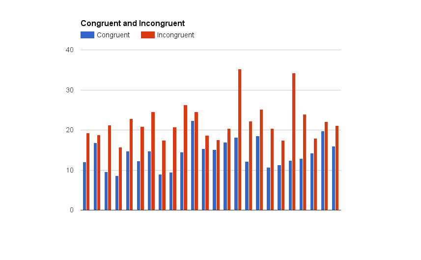

In this project, we will investigate a classic phenomenon from experimental psychology called the Stroop Effect. We will learn a little bit about the experiment, create a hypothesis regarding the outcome of the task, then go through the task. We will then look at some data collected from others who have performed the same task and will compute some statistics describing the results. Finally, we will interpret the results in terms of our hypotheses.
1. What is our independent variable? What is our dependent variable?
The independent variables are conditions (congruent/incongruent) and the dependent variable is the time it takes to name the ink colors
2. What is an appropriate set of hypotheses for this task? What kind of statistical test do you expect to perform? Justify your choices.
H0: the population mean response time is the same for both condition
HA: the population mean response time in each condition is different
In other words:HA: µ1 ≠ µ2
Because the sample size is small (n=24 is less than 30) and the population standard deviation is not known, so our test statistic has a t-distribution, plus the distributions are nearly normal and we are comparing 2 dependent samples of data, the appropriate statistical test we're going to use here is a 2 tailed dependent t-test
3. Report some descriptive statistics regarding this dataset. Include at least one measure of central tendency and at least one measure of variability.
- Mean: 14.05
- Standard Deviation: 3.56
- Mean: 22.02
- Standard Deviation: 4.80
4. Provide one or two visualizations that show the distribution of the sample data. Write one or two sentences noting what you observe about the plot or plots.
The time it takes to name the ink colors in incongruent condition is longer than that of congruent condition
5. What is your confidence level and your critical statistic value? Do you reject the null hypothesis or fail to reject it? Come to a conclusion in terms of the experiment task. Did the results match up with your expectations?
- Confidence Interval: lower limit = -10.01, upper limit = 2.1
- t critical value: 2.07
- t statistics: 8.02